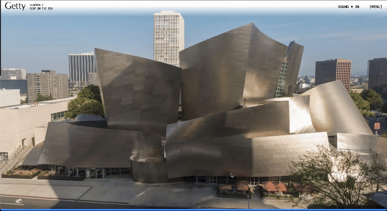
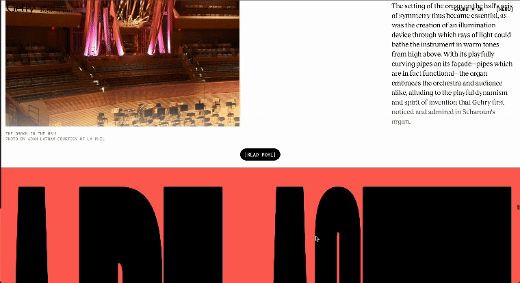
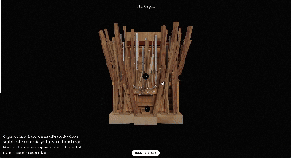
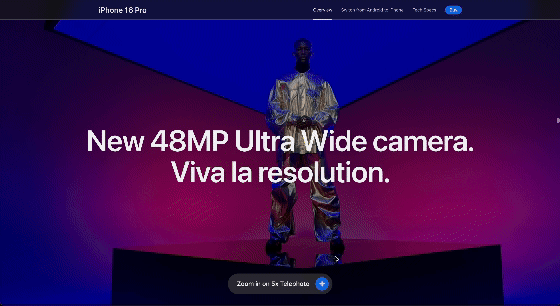
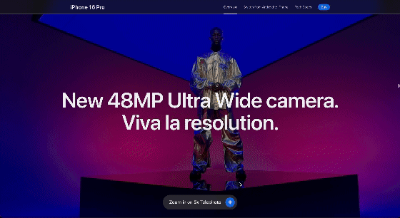
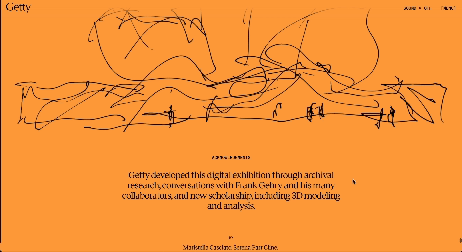

A1 - Interactive Experience
Research Project
Vo Cao Sang - S4023123
A1 - Interactive Experience
Research Project
Vo Cao Sang - S4023123
The oversized, ultra-bold font used for "SCULPTING HARMONY" immediately captures attention, while the abstract sketch at the top reflects the artistic and architectural themes of Frank Gehry's work. This large, uppercase font on the homepage stands out, responding dynamically to the user's cursor movement. As the cursor moves around within the bold letters, more letters appear, creating an engaging interactive experience.

Additionally, the soothing background music enhances the user experience, effectively conveying the theme of sculptural architecture. Overall, the bold aesthetic choices contribute to a strong visual identity, while the minimalist user interface ensures a seamless browsing experience.

What I find particularly interesting about this website is that it allows me to explore different models across various pages, allowing me for rotation, zooming, and examination from multiple angles in a 3D environment, and I can also click on specific parts of the models to access more detailed information about them.
This process totally sparks the user's curiosity, leading their experience into an engaging and informative way. As they delve into the intricacies of the works, they uncover layers of meaning and context that enhance their understanding.
During my two-minute interaction with the experience, the most common action was exploring different models and hovering over various points on those models. The interactions were incredibly smooth, reflecting my curiosity about the different models. The design successfully combines 3D and 2D elements on the website, boosting user engagement and providing a multifaceted understanding of the architectural design. Generally, this part absolutely makes complex architectural concepts more accessible to users.
The primary goal of the website is to provide an educational and immersive exploration of the architectural process. It offers users an in-depth look at the author's ideas and how they developed from initial sketches to completed models.
One of the most fascinating aspects of my interactive experience was the author's ability to integrate various materials and formats within the website. This journey led me through a range of surprises, from small discoveries to significant ones, including 3D models, photographs, videos, 2D sketches, and more. This approach is impressive in terms of educational value, as it makes the experience feel like an interactive study rather than a static presentation.
The interactive experience offered by this website effectively communicates its primary goal: to educate and immerse users in the architectural process. It achieves this through a diverse range of designs and functional choices, including interactive 3D elements, a user-friendly interface, a minimalist yet elegant design, smooth animations, and so on.
Especially, all videos, photographs, and 3D models are presented in high quality, making the information both engaging and visually appealing. Overall, this digital exhibition successfully showcases its works, allowing both casual visitors and architecture enthusiasts to navigate and explore with ease.
First and foremost, the experience of this website is a progressive exploration over time. Visitors could watch some videos and discover 3D models or sketches to have an overview information of Gehry's work. After that, they could come back later to gain more deep information from reading about the creative process. Over time, visitors could revisit the website as a reference for their studies.
I would say, this website is considered a digital museum because the experience encourages repeated engagement. This lets users come back over time rather than a one-time visit because the more they interact with the site, the more new insights they can gain from its interactive content.
The interactive experience of the site encourages users to visit again through its layered design and their interesting interactive designs. Unlike other websites with tracking features or personalized dashboards, this site mainly lets users explore its content freely at their own pace. Therefore, users do not need to observe all information at a time, they can come back later to continue their exploration journey.
The Getty Museum website feature and scrolling are reminiscent of how Apple showcases their products. Scrolling through the site makes visitors feel very cinematic, very similar like the way Apple introduces their products. Apple also has their 3D models for users to interact and explore its products within the site.
Generally, by combining digital and traditional media forms such as videos, photographs, 3D elements, interactive elements, hand-drawn sketches, film, and documentary style, the Getty site indeed creates an extremely engaging experience for visitors to explore its different layers of storytelling.

 

While the Getty Museum's website shares some similar features and interactive elements with Apple, it provides more detailed information about each section. As I scroll down the page, my curiosity grows, compelling me to explore their works and creative practices further. Each scroll reveals something new, intensifying my desire to discover everything they offer.
The Getty Museum website helps me I feel like I really appreciate their works while providing a wealth of knowledge, including historical context. What I mean is that this site is a process of historical discovery, I can feel like I am learning history and creativity in the same time. The clean, elegant typography and structured layout has reinforced the user experience to the highest, giving a sense of satisfaction and credibility. This is more than just a typical website, it serves as a platform for serious exploration.
While scrolling down through the site, I noticed that there are three strange parts which are the making noise, shaping curves, and sailing the sea of sound. All of these parts make my experience somewhat feel a bit awkward because these elements do not properly fit the overall layout but slow down fit the size when scrolling down, making me feel a bit unsatisfied with my experience.


One of the most satisfying parts of my experience on the site is the smooth scrolling feature. It feels incredibly cinematic, and smooth with all of the formats they incorporate within the site, enhancing my overall comfort with my experience. Especially, there is a section dedicated to acknowledging everyone involved in the project including developers, designers, animators, collaborators, colleagues, music performer, and more. This adds a sense of authenticity and credibility, highlighting the idea that the site is not just a standalone project but a collective effort that combines architecture, history, and digital media.
